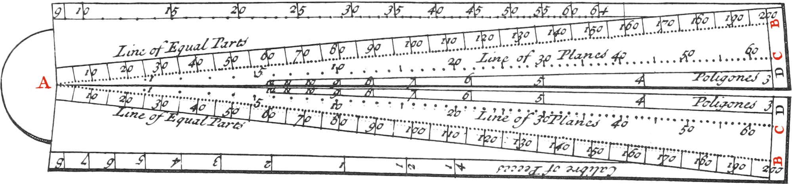
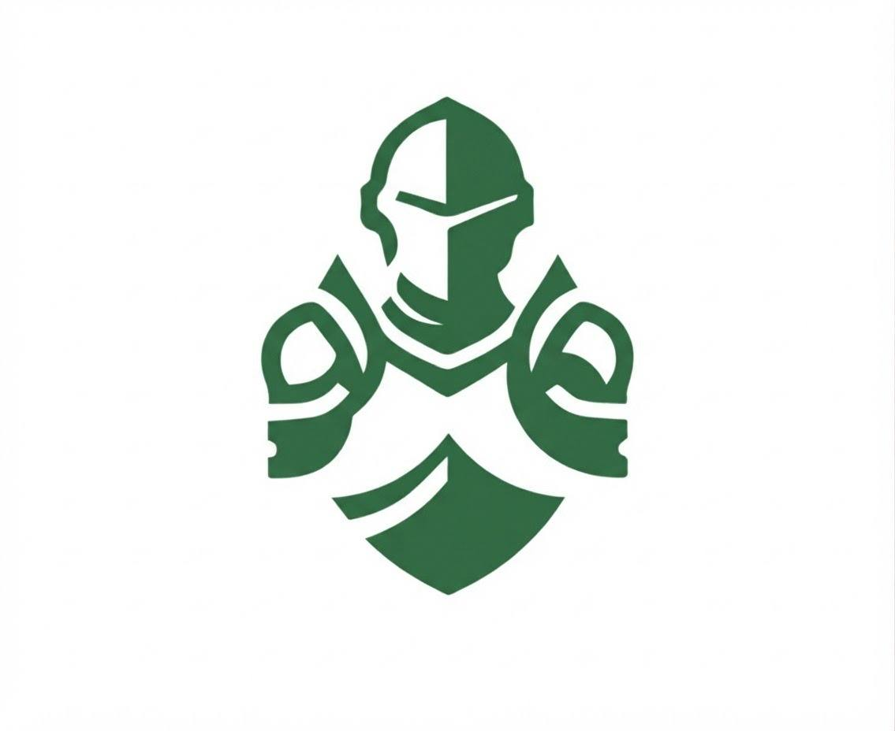
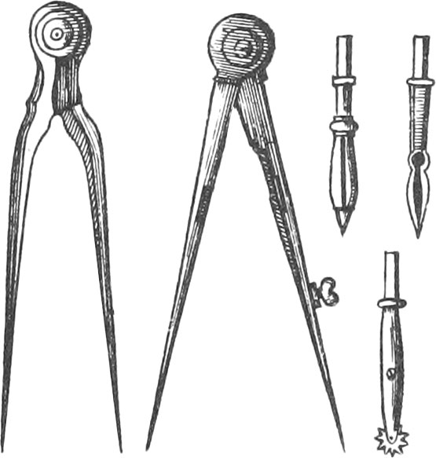
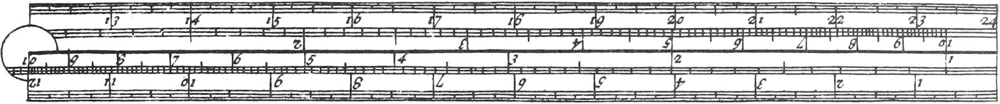
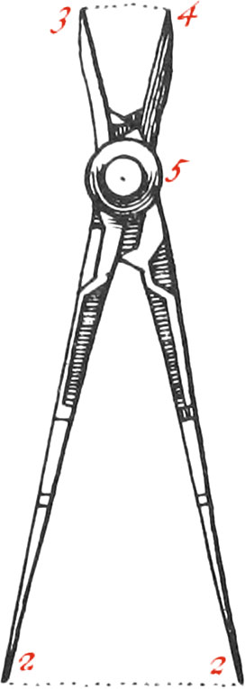
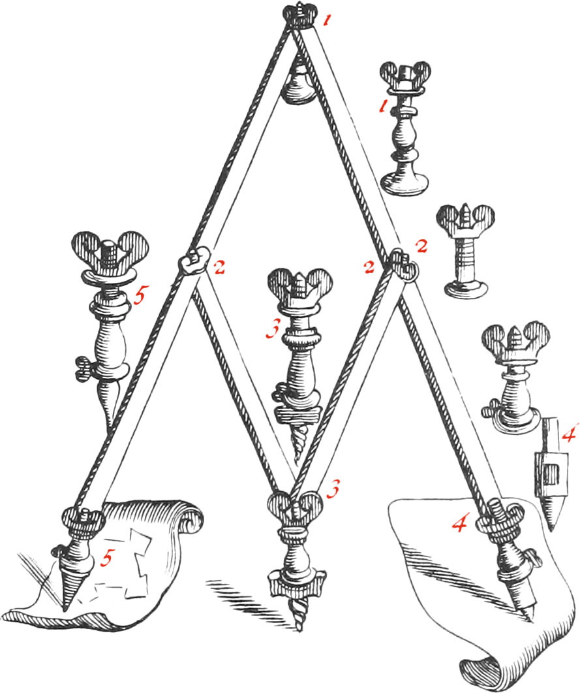
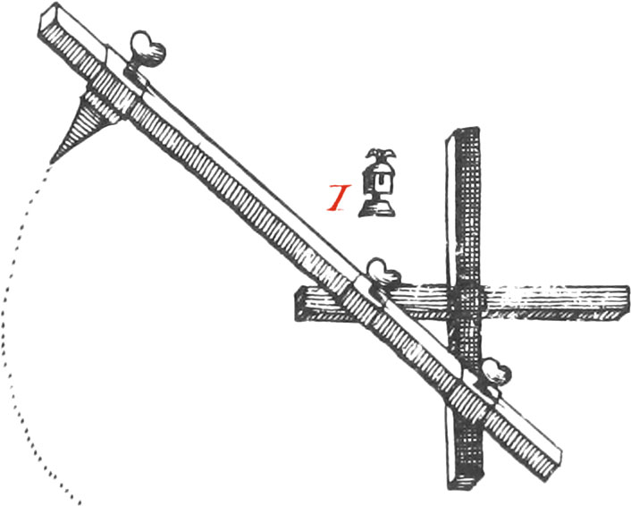
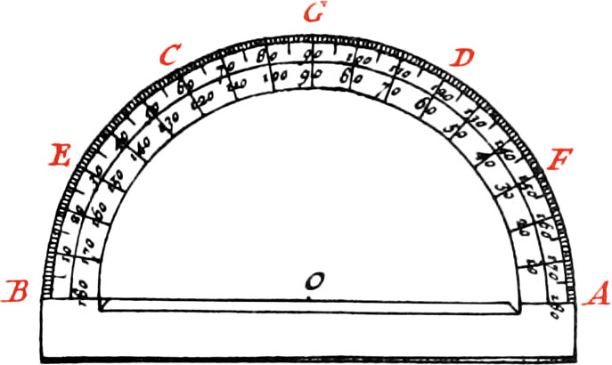

01

Алгебра
Вычислительный секторВычисления с помощью шкал и пропорций.

espada.Настоящие инструменты из исторического атласа. Семь постоянных сюжетов для семи математических разделов.

Вычисления с помощью шкал и пропорций.

Точные окружности, расстояния и построения.

Порядок чисел, действия и измерение величин.

Инструмент для деления отрезка на равные части.

Механизм, который переносит рисунок в другом масштабе.

Движение механизма превращается в математическую кривую.

Точные измерения — начало работы с данными.